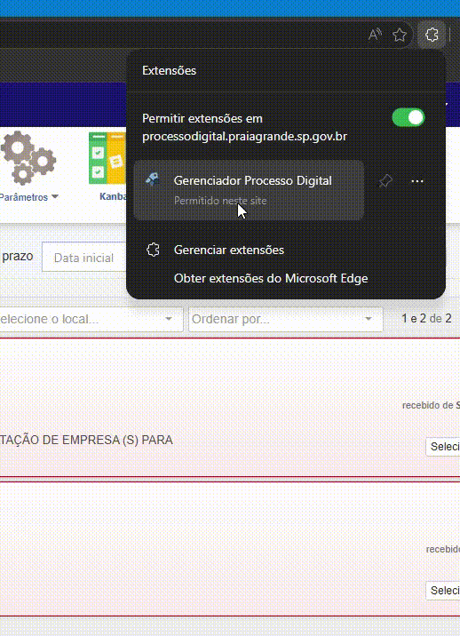
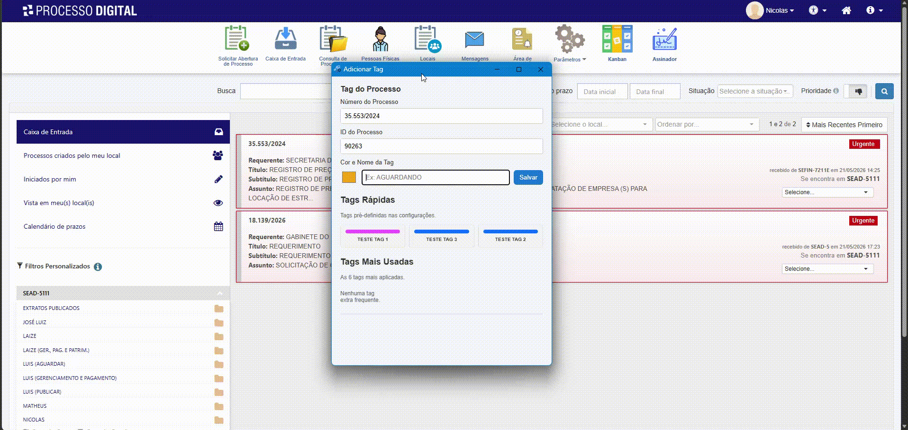
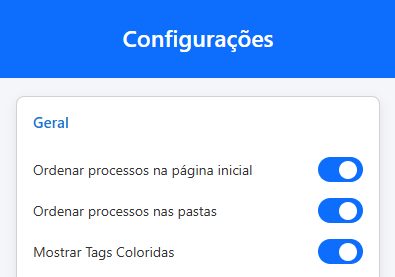
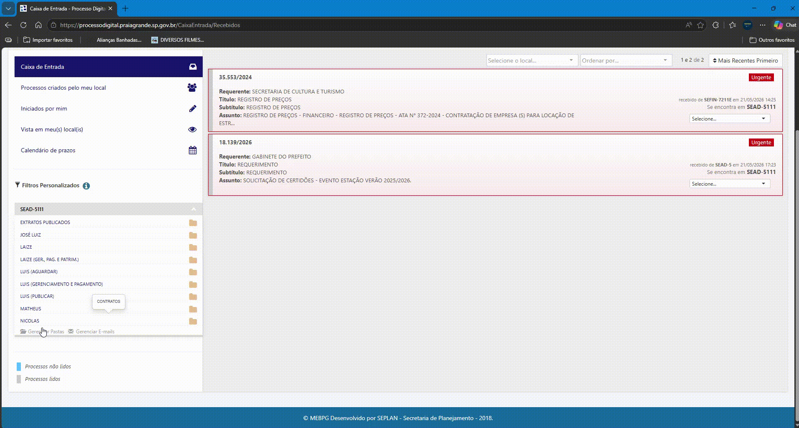
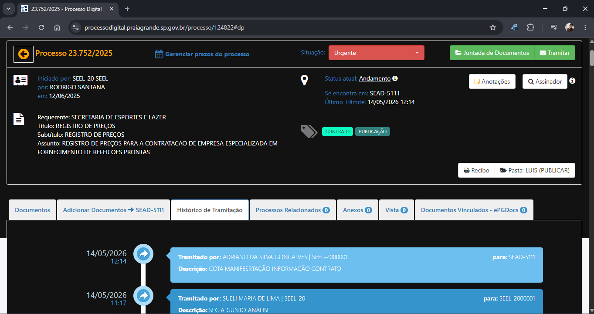
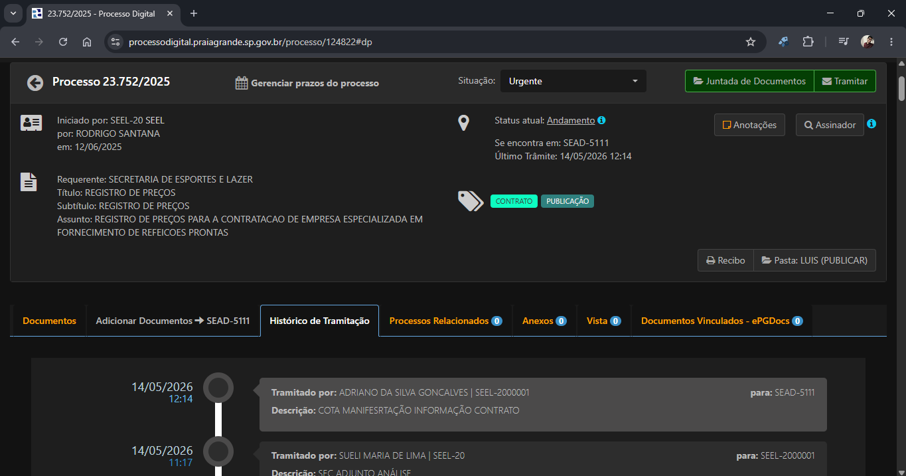
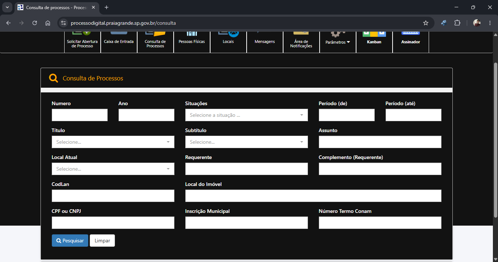
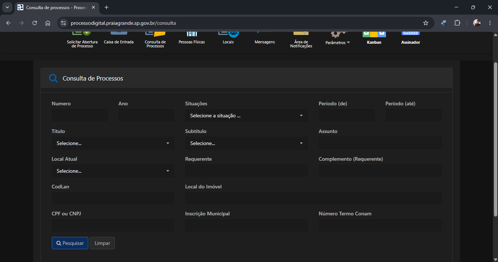

Manual do Gerenciador - Processo Digital
Sua extensão foi atualizada com sucesso! Confira abaixo o guia completo de todas as ferramentas disponíveis para otimizar seu fluxo de trabalho.
1. Configurações Iniciais
Painel de Controle e Preferências
-
Abrir Popup: Clique no ícone da extensão na barra de ferramentas do seu navegador para abrir o painel de acesso rápido.
-
Opções de Ordenação da Caixa de Entrada e das Pastas: Configure as regras de prioridade e a ordem padrão de exibição dos seus processos nas listagens e pastas monitoradas.
-
Estilo de Menu: Alterne e personalize o visual dos menus da extensão para se adequarem melhor à sua tela de trabalho.
-
Criar Tags Rápidas: Defina seus modelos favoritos de tags com nomes e cores personalizadas para aplicação em lote ou clique único.
-
Posição das Tags Rápidas: Escolha e ajuste o local e o layout onde os botões de tags rápidas serão exibidos na interface do sistema.
-
Importar/Exportar Tags: Faça backup das suas tags personalizadas ou transfira suas configurações para outro computador de forma simples.

Manipulação de Tags nos Processos
- Aplicar Tags: Clique com o botão direito sobre qualquer processo na lista para aplicar uma Tag Rápida instantaneamente.
- Editar Tags: Modifique os metadados, cores ou títulos de tags já existentes diretamente pelo painel.
- Excluir Tags / Excluir Todas: Remova tags individuais de um processo ou use a função de limpeza em lote para apagar todas as tags rápidas configuradas.
- Excluir Tags Rápidas: Gerencie sua lista de favoritos removendo as que não usa mais nas opções.

Exemplo de Aplicação de Tags ao Processo

Ordenação de Processos
Utilize o sistema inteligente de ordenação para listar os processos de acordo com a data de recebimento deles. Podendo ser listado do mais recente para o mais antigo ou do mais antigo para o mais recente

2. Acompanhamento e Pastas
Acompanhar Pastas
Monitore setores ou pastas específicas do sistema digital. A extensão avisa sempre que houver novas movimentações ou novos processos inseridos nos ambientes monitorados.

3. Fluxo de Trabalho (Kanban)
Gestão Visual de Processos
- Adicionar ao Kanban: Envie processos digitais para o seu quadro Kanban com um clique.
- Mover Cards: Arraste e solte os processos entre as colunas personalizadas para alterar o status do fluxo.
- Processo Físico: Sinalize e rastreie de forma diferenciada os processos que possuem volumes físicos na repartição.

4. Gestão de Documentos e Arquivos
Envio e Organização Automática
- Envio de Documentos: Realize o upload em lote de arquivos PDF e minutas diretamente para as peças do processo.
- Organização de Arquivos: Padronização automática de nomenclaturas e separação de documentos por categorias inteligentes.

5. Customização de Interface
Modo Escuro (Dark Mode)
Proteja sua visão durante longas jornadas de trabalho. O Modo Escuro adapta toda a interface do sistema para tons confortáveis. Sendo uma opção melhor do que a alteração de constante nativa da platadorma
Arraste a barra central do slider ao lado para comparar!




6. Painel de Controle do Assinador
Recursos do Módulo de Assinaturas
- Modo Tabela: Alterne a visualização padrão do assinador para um formato de tabela limpo, compacto e fácil de filtrar.
- Informações Expandidas: Veja dados cruciais do processo logo na listagem inicial sem precisar abrir o processo inteiro.
- Assinaturas: Status detalhado de quem já assinou e quais assinaturas ainda estão pendentes.
- Pastas e Filtros: Triagem avançada de lotes de documentos enviados para conferência.

7. Fluxo de Assinatura de Gabinete
Assinador Digital e Secretários
Módulo especializado para o envio e despacho célere de documentos que exigem a assinatura digital direta dos Secretários e Chefias de Gabinete, centralizando o status do envio.

8. Formalização e Comunicação
Ferramentas de Contratos
- E-mail Integrado: Modelos e envio de notificações para interessados direto da tela do processo.
- Cota e Cálculo: Lançamento de cotas e acompanhamento de valores contratuais.
- Formalizar: Geração assistida de termos de contratos e termos aditivos padronizados.
- Quadro Resumo: Painel condensado com os dados mais vitais do contrato para conferência rápida.

9. Central de Acessos
Sites e Links Úteis
Um repositório de links rápidos integrado diretamente nas opções da extensão, conectando você aos diários oficiais, sistemas internos e portais de consulta sem precisar preencher favoritos no navegador.

Pronto! Sua extensão está configurada para maximizar sua produtividade.